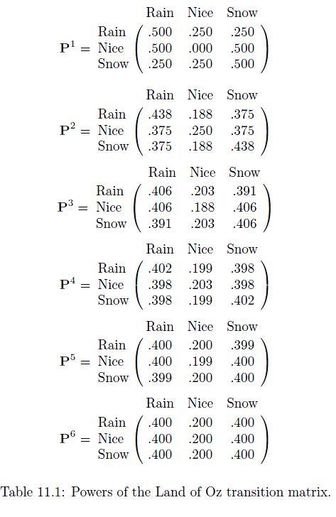
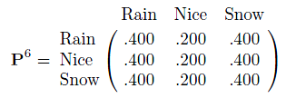
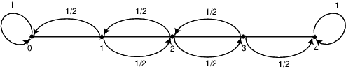
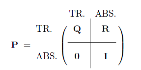

Markov Chains and Random Walks¶
Markov Chains are named after Andrey Markov.
They are a next step in the evaluation of probabilities
- the probability of the next event in a sequence depends upon the previous event, but only the previous event.
Contrast this with a purely random series of events where each event is independent.
Most of what we've done up to now has dealt with independent events.
This should be an example, TSA, would you want your chances of being checked depending on the person ahead of you in the queue?
On the otherhand, clearly many real events do depend on what just happened
if it rains today will it rain tomorrow?
Content fillers¶
A context you may have come across them is in generating text.
There are reddit channels soley populated by bots random content (not all links guarenteed SFW)
A little experimentation can generate Garkov, improved Garfield comic strips
And, of course,
Holmes in a nutshell¶
chapter 15 of Programming Pearls:
A generator can make more interesting text by making each letter a random function of its predecessor. We could, therefore, read a sample text and count how many times every letter follows an A, how many times they follow a B, and so on for each letter of the alphabet. When we write the random text, we produce the next letter as a random function of the current letter. The Order-1 text was made by exactly this scheme:
t I amy, vin. id wht omanly heay atuss n macon aresethe hired boutwhe t, tl, ad torurest t plur I wit hengamind tarer-plarody thishand.
We can extend this idea to longer sequences of letters. The order-2 text was made by generating each letter as a function of the two letters preceding it (a letter pair is often called a digram). The digram TH, for instance, is often followed in English by the vowels A, E, I, O, U and Y, less frequently by R and W, and rarely by other letters.
Ther I the heingoind of-pleat, blur it dwere wing waske hat trooss. Yout lar on wassing, an sit." "Yould," "I that vide was nots ther.
The order-3 text is built by choosing the next letter as a function of the three previous letters (a trigram).
I has them the saw the secorrow. And wintails on my my ent, thinks, fore voyager lanated the been elsed helder was of him a very free bottlemarkable,
By the time we get to the order-4 text, most words are English, and you might not be surprised to learn that it was generated from a Sherlock Holmes story ( "The Adventure of Abbey Grange").
His heard." "Exactly he very glad trouble, and by Hopkins! That it on of the who difficentralia. He rushed likely?" "Blood night that.
The text in Garkov strips is generated in exactly this way, but using words instead of letters. The input corpus is, as you'd expect, the text of many old Garfield strips.
Google Hegemony¶
But Markov chains aren't just useful for automatically generating content parodies. They're also quite practical. You might even say Markov chains are a large part of what powers today's internet.
Markov chains underly, or at least are one way to understand, Google's trillion dollar PageRank formula:
The formula uses a model of a random surfer who gets bored after several clicks and switches to a random page. The PageRank value of a page reflects the chance that the random surfer will land on that page by clicking on a link. It can be understood as a Markov chain in which the states are pages, and the transitions, which are all equally probable, are the links between pages.
If a page has no links to other pages, it becomes a sink and therefore terminates the random surfing process. If the random surfer arrives at a sink page, it picks another URL at random and continues surfing again.
from wikipedia
What actually is a Markov Chain?¶
so to be a bit more precise.
- We have a set of states, $S = {s_1,s_2,\ldots,s_n}$.
- The process starts in one of those states and every step, it moves from one state to another.
- If the chain is currently in state $s_i$ then it moves to state $s_j$ with probability $p_{ij}$.
- $p_{ij}$ only depends on the states $i$ and $j$ and not on the history of the chain
definition
The $p_{ij}$ are called transition probabilities. Note it is possible for the chain to remain in the same state, with probability $p_{ii}$.
Visual picture¶
Nice animations and explanation here!Transition Matrix¶
According to Kemeny, Snell, and Thompson, the Land of Oz is blessed by many things, but not by good weather.
They never have two nice days in a row. If they have a nice day, they are just as likely to have snow as rain the next day. If they have snow or rain, they have an even chance of having the same the next day. If there is change from snow or rain, only half of the time is this a change to a nice day.
They never have two nice days in a row. If they have a nice day, they are just as likely to have snow as rain the next day. If they have snow or rain, they have an even chance of having the same the next day. If there is change from snow or rain, only half of the time is this a change to a nice day.
With this information we form a Markov chain as follows. We take as states the kinds of weather R, N, and S. From the above information we determine the transition probabilities. These are most conveniently represented in a square array as
$$ \textbf{P} = \left( \matrix{ & \text{R} & \text{N} & \text{S} \cr \text{R} & 1/2 & 1/4 & 1/4 \cr \text{N} & 1/2 & 0 & 1/2 \cr \text{S} & 1/4 & 1/4 & 1/2} \right) $$
The rows of our matrix $\mathbf{P}$ give the probabilities for the kinds of weather that follow R, N, or S.
definition¶
such a matrix, $\mathbf{P}$, is called a transition, or stochastic matrix.
It says if today is Rainy - so state $s_i = R$, we can transition to 1 of 3 new states:
- R with probability $p_{RR} = 0.5$
- N with probability $p_{RN} = 0.25$
- S with probability $p_{RN} = 0.25$
each row must sum to 1, we must end up in one of the states.
definition¶
The initial state vector, $\mathbf{u}$ ,is a probability vector which represents the starting distribution.
The sum of the elements of $\mathbf{u}$ must be 1.
example If today is a rainy day, what is the forecast for tomorrow?
We have an initial state vector $\textbf{u} = (1,0,0)$, then our forecast would be $\textbf{uP}$
$$ (1,0,0) \left( \matrix{ 1/2 & 1/4 & 1/4 \cr 1/2 & 0 & 1/2 \cr 1/4 & 1/4 & 1/2} \right) = (1/2,1/4,1/4) $$
in agreement with our expectations
Visual picture of a Markov Chain¶
Visual-picture of the transition matrixYou can adjust the chain by providing a valid transition matrix. This should be specified as a valid 2D python array (note the double [[ and ]] at beginning and end).
Looking ahead¶
We consider the question of determining the probability that, given the chain is in state $i$ today, it will be in state $j$ two days from now.
We denote this probability by $p_{ij}^{(2)}$.
We look for the probability that, if it is rainy today then it will be snowy in two days time.
The event that it is snowy two days from now is the disjoint union of the following three events:
- it is rainy tomorrow and snowy two days from now,
- it is nice tomorrow and snowy two days from now,
- it is snowy tomorrow and snowy two days from now.
The probability of the first of these events is the product of the conditional probability that it is rainy tomorrow, given that it is rainy today, and the conditional probability that it is snowy two days from now, given that it is rainy tomorrow.
$$ P(\text{Snowy day 2 }|\text{ Rainy day 1}) \times P(\text{Rainy day 1} | \text{Rainy day 0}) $$
Using the transition matrix $\textbf{P}$, we can write this product as $p_{11}p_{13}$.
$$ \textbf{P} = \left( \matrix{ & \text{R} & \text{N} & \text{S} \cr \text{R} & 1/2 & 1/4 & 1/4 \cr \text{N} & 1/2 & 0 & 1/2 \cr \text{S} & 1/4 & 1/4 & 1/2} \right) $$
The other two events
- it is nice tomorrow and snowy two days from now,
- it is snowy tomorrow and snowy two days from now.
also have probabilities that can be written as products of entries of $\textbf{P}$.
Thus, we have
$$p_{13}^{(2)} = p_{11}p_{13} + p_{12}p_{23} + p_{13}p_{33}\ .$$
This looks like the rule for matrix multiplication!
More generally, the argument can be extended and we find
theorem
let $\textbf{P}$ be the transition matrix of a Markov Chain. Then the $ij$th entry, $p_{ij}^{(n)}$, of the matrix $\textbf{P}^{(n)}$ gives the probability that the Markov Chain stating in state $s_i$ will be in the state $s_j$ after $n$ moves.
This can be worked out using matrix multiplication, as you've been doing in linear algebra.
Limiting¶
Of particular interest would be the properties of the matrix $\textbf{P}^{(n)}, n \to \infty$.
Let's look at the Land of Oz example as we apply the $\textbf{P}$ matrix repeatedly

To get our n-day forecast we calculate, using an initial state vector $\textbf{u} = (a,b,c)$, our forecast $\textbf{u$^{(n)}$} = \textbf{uP$^{(n)}$}$
To get the long term behaviour of the system, we need to calculate $\textbf{P}^{(n)}, n \to \infty$.
We see something very interesting if we look at $\textbf{P}^{(6)}$

all the rows have become the same.
This means that no matter what initial state vector we start from, our forecast is the same!
We will see that if we were to take a vector $\textbf{w} = (0.4,0.2,0.4)$ then it would be stationary, or at equilibrium for long times.
This can be written $\textbf{w} \textbf{P} = \textbf{w}$.
This hints that by finding the eigenvectors and eigenvalues of $\textbf{P}$ we'll be able to explore its long time behaviour.
Types of Marokov Chain¶
there are actually several types of Markov chain that can be categorized by the properties of their transition matrices. Their properties are qualitatively different in the long term.
We'll only look at
- Absorbing chains
- Ergodic Chains
- Regular Chains
Absorbing Markov Chains¶
definition
a Markov Chain is called absorbing if it has at least one state $s_i$ that is impossible to leave, $p_{ii} = 1$, and it is possible to reach an absorbing state from every state.
definition
states with $p_{ii} = 1$ are called absorbing states. Other states are called transient states.
Example
A man walks along a four-block stretch of Park Avenue.
If he is at corner 1, 2, or 3, then he walks to the left or right with equal probability.
He continues until he reaches corner 4, which is a bar, or corner 0, which is his home.
If he reaches either home or the bar, he stays there.

We form a Markov chain with states 0, 1, 2, 3, and 4. States 0 and 4 are absorbing states.
The transition matrix is then
$$ \textbf{P} =\begin{matrix} & 0 & 1 & 2 & 3 & 4 \cr 0 & 1 & 0 & 0 & 0 & 0 \cr 1 & 1/2 & 0 & 1/2 & 0 & 0 \cr 2 & 0 & 1/2 & 0 & 1/2 & 0 \cr 3 & 0 & 0 & 1/2 & 0 & 1/2 \cr 4 & 0 & 0 & 0 & 0 & 1 \cr \end{matrix} $$ The states 1, 2, and 3 are transient states, and from any of these it is possible to reach the absorbing states 0 and 4.
The chain is an absorbing chain. When a process reaches an absorbing state, we shall say that it is absorbed.
Markov Chain diagrams¶
it can be useful to depict a Markov Chain in diagramatic form.
For instance for the Drunkard's walk we had
the nodes show the states, $s_j$, whilst the arrows show the transition probabilities, $p_{ij}$.
The diagrams make it easy to spot absorbing states, here the two end states, which have no arrows heading back to other states.
example
example of an absorbing Markov chain

The 100 is absorbing (in the sense the game ends at that point). The other tiles are transient states.
It is quite possible to set up and solve this, finding the tiles that most time is spent on etc.
You can change the `rolls` variable to simulate longer and longer games. The shading of the squares shows the probability of being at that square after the given number of rolls.
Canonical Form¶
If we rearrange the transition matrix for an absorbing chain so that the transient states are first, followed by the absorbing states we get the so called canonical form, which will have the general form

and it can be shown that it retains the same block structure when raised to the power $n$. We can extract the answers to the questions from the matrices $\mathbf{Q}$ and $\mathbf{R}$:
- What is the probability that the process will eventually reach an absorbing state?
- What is the probability that the process will end up in a given absorbing state?
- On the average, how long will it take for the process to be absorbed?
- On the average, how many times will the process be in each transient state?
The answers to all these questions depend, in general, on the state from which the process starts as well as the transition probabilities.
Ergodic Markov Chains¶
definition¶
A Markov chain is called an ergodic chain if it is possible to go from every state to every state (though this can be in several moves).
definition¶
A Markov chain is called a regular chain if some power of the transition matrix has only positive elements.
Every regular chain is ergodic, but not all ergodic chains are regular.
Long time behaviour¶
Regular Markov chains have a well defined long term behaviour
theorem Let $\textbf{P}$ is the transition matrix from a regular chain. Then, as $n \to \infty$, the powers $\textbf{P$^{(n)}$}$ approach a limiting matrix $\textbf{W}$ with all rows the same vector $\textbf{w}$.
If we look at our Land of Oz example we can see this in action
If this vector $\textbf{w}$ is a steady state of the chain then we should have that $\textbf{w} \textbf{P} = \textbf{w}\lambda$.
In fact we have that $\textbf{w} \textbf{P} = \textbf{wI}$, where $\textbf{I}$ is an identity matrix, because we need to preserve the amount of probability
We can find $\textbf{w}$ by linear algebra techniques:
- find the eigenvalues/vectors of $\textbf{P}$
- directly solve $\textbf{w} \textbf{P} = \textbf{wI}$, as we know that we want the eigenvector with eigenvalue 1.
Random Walks¶
random walks can occur in spaces with various dimensions. The simplest ones work with a fixed step.
We've seen one, in 1D - the difference between the number of heads and tails thrown when a coin is repeatedly tossed
- at each step the walker can move up, with probability $p$, or down, with probability $1-p$ the number line
In 2D (on a regular grid)
- at each step the walker can move to one of the eight neighbouring sites
In 3D (on a regular grid) we have something rather similar to diffusion
- at each step the walker can move to one of the 9 + 8 + 9 = 26 neighbouring sites
Interestingly, there are qualitative differences between the walks in 1 and 2 or 3 dimensions.
- It can be proved that in 1 or 2 D the walker will always return to its starting point.
- In 3D the walker may never return (probability of return is approximately only 1/3)
Grinstead and Snell sum this up as
"One may summarize these results by stating that one should not get drunk in more than two dimensions."
Summary¶
- describe the evolution between a series of states
- Markov Chains depend on the current state, but not previous history
- Initial state vector defines how the chain starts
- Transition matrix (often called the stochastic matrix) built from the transition probabilities between states
- evolution occurs by applying the transition matrix repeatedly - each application is a step
- use methods of linear algebra to explore long time properties of the chains